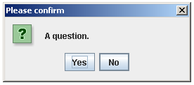
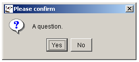
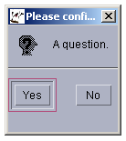

Package org.sm.smtools.swing.dialogs
Class JConfirmationDialog
java.lang.Object
org.sm.smtools.swing.dialogs.JConfirmationDialog
public final class JConfirmationDialog
extends java.lang.Object
The
JMessageDialog class pops up a standard "Ok/Cancel" dialog box containing a question.
Note that this class cannot be instantiated, nor can it be subclassed; use the static
confirm(java.awt.Component, java.lang.String) method instead. A valid I18NL10N database must
be available!
Depending on the application's current look-and-feel, the dialog box looks as follows:
Java Metal L&F

Microsoft Windows L&F

Motif L&F

Note that this class cannot be subclassed!
- Version:
- 06/08/2019
- Author:
- Sven Maerivoet
-
Method Summary
Modifier and Type Method Description static booleanconfirm(java.awt.Component parentComponent, java.lang.String question)Pops up a up a standard "Ok/Cancel" dialog box containing a specified question.Methods inherited from class java.lang.Object
clone, equals, getClass, hashCode, notify, notifyAll, toString, wait, wait, wait
-
Method Details
-
confirm
public static boolean confirm(java.awt.Component parentComponent, java.lang.String question)Pops up a up a standard "Ok/Cancel" dialog box containing a specified question.This method should be called as follows:
boolean ok = JConfirmationDialog.confirm(parent,message);Note that a valid
I18NL10Ndatabase must be available!- Parameters:
parentComponent- the frame in which this dialog is to be displayedquestion- a string containing a specified question- Returns:
truewhen the user has agreed (i.e., "ok"),falseotherwise
-